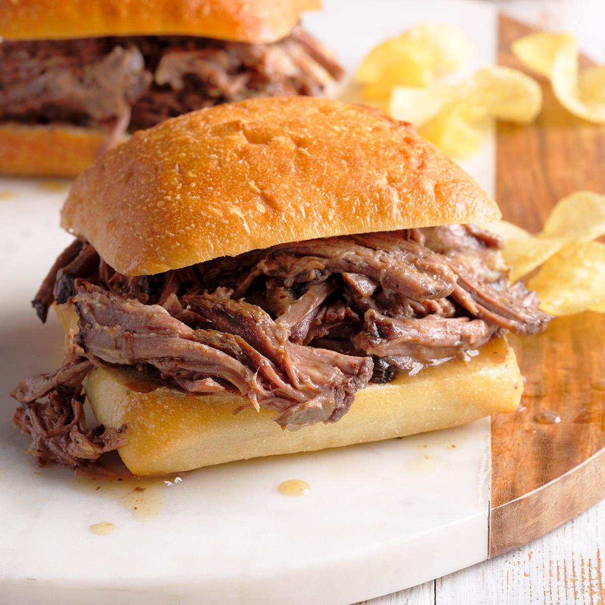

Beef Sandwiches are a 5-ingredient crock pot recipe version of the popular hot sandwich recipe. This easy dinner recipe is a crowd-pleaser!
Ingredients
- 4 slices leftover roast beef
- Tomatoes
- Olive oil
- Tesco Finest ciabatta loaf
- handfuls rocket
Steps
- Preheat the oven to gas 6, 200°C, fan 180°C. Allow the beef slices to come to room temperature.
- Put the tomatoes in a small oven dish and top with a pinch of salt and oregano and 1/2 tsp of the oil.
- Remove the bread after 8 minutes but leave the tomatoes to roast for a further 10 minutes.
- Cut the bread in half and then cut each half open. Brush the insides with remaining olive oil, then griddle until lightly charred. Rub the charred sides with the cut sides of the garlic cloves.
- pread half the horseradish over one piece of the toasted ciabatta, top with a couple of slices of beef, season with salt and pepper and then top with a handful of rocket and some roasted tomatoes. Sandwich with the other piece of toasted ciabatta and repeat to make the second sandwich. Serve immediately.
Return to Home Page